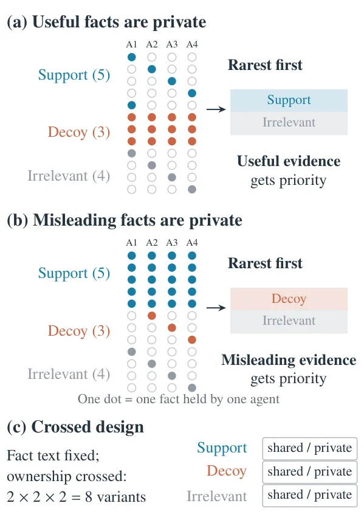
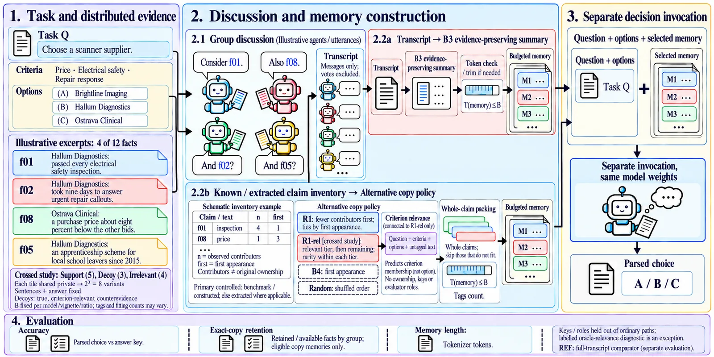
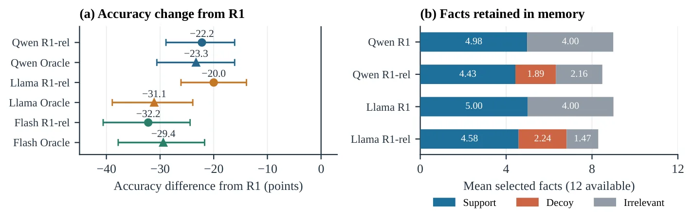
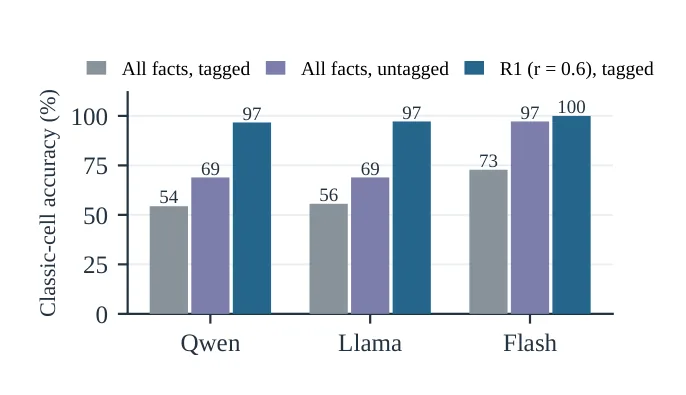

O Problema da Memória em Grupos de Agentes
Quando múltiplos agentes de linguagem (LLMs) discutem um problema, o conjunto de evidências necessário para uma decisão correta muitas vezes está distribuído entre eles. Alguns fatos são compartilhados por todos, enquanto outros são privados, conhecidos apenas por um ou poucos agentes. O desafio surge quando um modelo final precisa tomar uma decisão baseada apenas em uma memória comprimida dessa discussão. Como escolher o que manter?
Duas heurísticas naturais surgem imediatamente: manter os fatos mais raros (afinal, se todos sabem, talvez não sejam informativos) ou manter os fatos relevantes para os critérios de decisão. Em tarefas clássicas de 'perfil oculto' (hidden-profile tasks), essas duas estratégias parecem alinhadas: os fatos úteis são frequentemente privados, e os enganosos são compartilhados. Isso cria uma ilusão de eficácia. Se um sistema escolhe fatos raros e acerta, não sabemos se acertou pela raridade ou porque os fatos raros eram, de fato, os corretos.
Este paper, intitulado 'Rare, Relevant, and Still Wrong: How Memory Fails LLM Group Decisions', investiga exatamente essa falácia. Os autores demonstram que, sem um controle rigoroso sobre quem possui qual fato, é impossível avaliar se as heurísticas de memória funcionam. Eles introduzem o CrossProfile, um benchmark projetado para desconectar a prevalência de um fato de sua utilidade decisória.

O Benchmark CrossProfile: Isolando Variáveis
O CrossProfile é um benchmark diagnóstico composto por 60 templates com chaves de resposta verificadas automaticamente, totalizando 480 tarefas. A inovação central não está nos temas das discussões, mas no design experimental. Para cada template, os autores criam oito variantes cruzadas onde a 'propriedade' dos fatos (se são compartilhados ou privados) é alterada, enquanto o texto dos fatos e seus papéis decisórios (suporte, engano ou irrelevante) permanecem fixos.
Isso permite testar políticas de memória contra um inventário conhecido de evidências. Uma política de memória, neste contexto, é um algoritmo que comprime a transcrição completa da discussão em um orçamento limitado de tokens. As estratégias avaliadas incluem: selecionar fatos raros primeiro (Rarest-first, R1), selecionar fatos relevantes primeiro (Relevance-first, R1-rel), selecionar pela primeira menção (First mention, B4), sumarização genérica (Evidence summary, B3) e seleção aleatória (Random).
Ao cruzar a propriedade dos fatos de suporte, engano e irrelevância, o design expõe onde cada heurística falha. Se a raridade fosse inerentemente boa, ela deveria funcionar em todos os cenários. Se a relevância fosse suficiente, ela deveria filtrar corretamente. O CrossProfile mostra que nenhuma dessas suposições se sustenta quando se controla rigorosamente a distribuição da informação.
A Ilusão da Raridade (Rarest-first)
A heurística R1 assume que fatos pouco mencionados são mais valiosos. Em benchmarks anteriores, como o HiddenBench, o R1 apresentava desempenho superior (88,2% no Qwen e 87,7% no Llama). No entanto, essa vantagem era confundida pela estrutura das tarefas: no HiddenBench, os fatos privados (raros) sempre apoiavam a resposta correta, e os compartilhados sempre favoreciam a resposta errada.
O CrossProfile revela que o R1 é, em média, tão bom quanto a seleção aleatória (64,0% vs 64,5% no Qwen; 63,0% vs 63,4% no Llama). A diferença crucial está na dependência da propriedade dos fatos de engano. Quando os fatos de suporte são privados e os de engano são compartilhados (o cenário clássico de perfil oculto), o R1 atinge 90-97% de acurácia. Mas quando a situação se inverte, o R1 cai para 18-40%, pois prioriza os fatos de engano que agora são raros.
O resultado é que a raridade não é uma propriedade intrínseca de utilidade; é uma aposta sobre quem detém os fatos enganosos. Se os fatos enganosos forem privados, a política R1 leva o modelo à ruína. A acurácia segue o equilíbrio de evidências que a memória consegue preservar, não a política de seleção em si.

A Falácia da Relevância (Relevance-first)
A segunda heurística comum é manter os fatos relevantes para os critérios de decisão. A lógica é que fatos irrelevantes devem ser descartados para economizar espaço de memória. No entanto, o conceito de 'relevância' no CrossProfile inclui fatos de engano (decoys). Esses fatos são verdadeiros e diretamente relacionados aos critérios de decisão, mas favorecem a opção errada.
Um filtro de relevância perfeito, que mantém todos os fatos relevantes e descarta os irrelevantes, falha em admitir esses enganos. No cenário clássico de perfil oculto (suporte privado, engano compartilhado), mesmo um filtro de relevância ideal perde de 23 a 31 pontos de acurácia em comparação com a seleção por raridade. Isso ocorre porque a relevância não distingue entre evidência que apoia a resposta correta e evidência que apoia a incorreta.
A média agregada mostra que o R1-rel tem desempenho superior ao R1 em média (devido ao equilíbrio de cenários), mas em células específicas onde o engano é compartilhado e o suporte é privado, a seleção por relevância é inferior à seleção por raridade. A conclusão é que a relevância é necessária, mas insuficiente. Sem saber o 'lado' que o fato apoia, mantê-lo é um risco.

O Viés de Atribuição e Prova Social
Os autores identificaram um viés crítico no modelo que toma a decisão final. Este modelo tende a dar mais peso a fatos que são atribuídos a múltiplos agentes, mesmo quando as fontes não são independentes. Esse comportamento imita a 'prova social' humana: se todos dizem algo, deve ser verdade.
Em experimentos de ablação, quando as tags de atribuição (quem disse o quê) foram removidas da memória, ou quando foram reatribuídas aleatoriamente mantendo a ordem das linhas, a acurácia no cenário clássico aumentou significativamente (13 a 24 pontos). Isso prova que o modelo não está apenas processando o conteúdo semântico, mas sendo enganado pela metadados sociais da discussão.
Este viés é particularmente perigoso em configurações onde fatos enganosos são compartilhados. Como muitos agentes 'confirmam' o fato enganoso, o modelo final tende a confiar nele, mesmo que a evidência privada (e correta) esteja presente na memória. A estrutura de atribuição distorce o equilíbrio de evidências que a política de memória tentou preservar.

Limitações e Perda de Evidência
O paper também destaca uma limitação fundamental: em discussões naturais, a evidência pode ser perdida antes mesmo de qualquer política de memória agir. Os autores observaram que, em alguns casos, a transcrição completa da discussão resultou em menor acurácia do que não ter nenhuma nota. Isso sugere que a própria dinâmica da geração de texto pelos agentes pode obscurecer ou contradizer as evidências críticas antes que elas sejam comprimidas.
Além disso, o CrossProfile é um benchmark diagnóstico. Ele isola variáveis específicas (propriedade, relevância, atribuição) em um ambiente controlado. Isso significa que os resultados podem não generalizar diretamente para discussões abertas e não estruturadas, onde a ordem de aparição, o custo de tokens e a coerência narrativa desempenham papéis diferentes. No entanto, a utilidade do benchmark está exatamente nesse isolamento: ele mostra que falhas previsíveis existem mesmo em condições ideais de controle.
Os testes foram realizados em modelos Qwen2.5-7B, Llama-3.1-8B e dois modelos DeepSeek (V4.1-Flash e V4-Pro). O padrão de falha foi consistente entre os modelos hospedados, indicando que o problema não é específico de uma arquitetura, mas sim das heurísticas de memória e do viés de atribuição inerentes à forma como esses modelos processam informações sociais.
Conclusões para Design de Agentes
A mensagem central do paper é que nem a raridade nem a relevância são padrões seguros para a memória de grupos de LLM. A raridade ajuda apenas quando os fatos raros apoiam a resposta correta, e a relevância falha ao admitir fatos enganosos que são tematicamente pertinentes. Além disso, o modelo tomador de decisão é vulnerável a vieses de prova social, dando peso indevido a fatos atribuídos a muitos agentes.
Para projetar sistemas de agentes mais robustos, os autores sugerem que os designs de memória devem focar no equilíbrio de evidências entre as opções, e não na prevalência ou tópico. Além disso, sistemas que apresentam a quantidade de agentes que apoiaram um fato como evidência para ele devem ser evitados, a menos que as fontes sejam independentes. Avaliações futuras devem variar quem detém quais evidências e verificar se essas evidências realmente chegaram à discussão.
O CrossProfile serve como um aviso: ganhos de precisão em benchmarks tradicionais podem mascarar falhas estruturais na forma como a informação é comprimida e ponderada. Sem diagnosticar esses pontos de falha, a confiança em sistemas de agentes multiplas pode ser enganosa.
O que fica
- A seleção de fatos por raridade (Rarest-first) não é superior à seleção aleatória em média; sua eficácia depende inteiramente de quem detém os fatos enganosos.
- Filtrar por relevância é insuficiente, pois fatos enganosos são frequentemente relevantes para o critério de decisão, confundindo o modelo.
- Modelos LLM exibem viés de 'prova social', dando peso excessivo a fatos atribuídos a múltiplos agentes, o que reduz a acurácia decisória.
- O benchmark CrossProfile permite isolar falhas de memória ao cruzar a propriedade dos fatos com sua utilidade, revelando vieses ocultos em avaliações tradicionais.
Paper original: Rare, Relevant, and Still Wrong: How Memory Fails LLM Group Decisions
Comentários
Nenhum comentário ainda. Seja o primeiro.